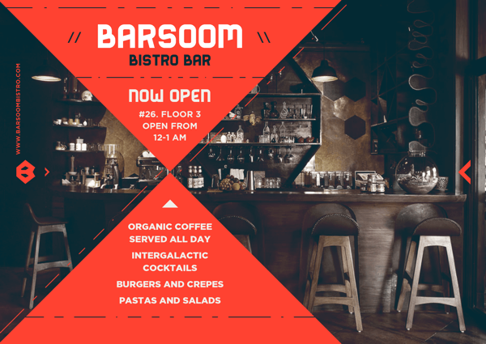
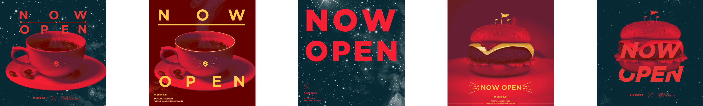
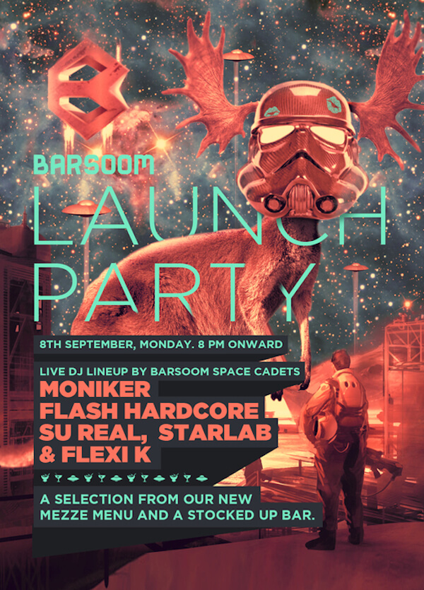
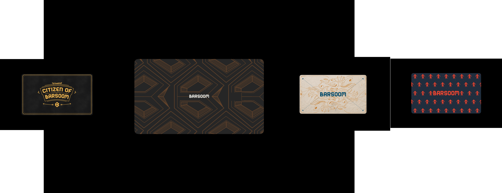
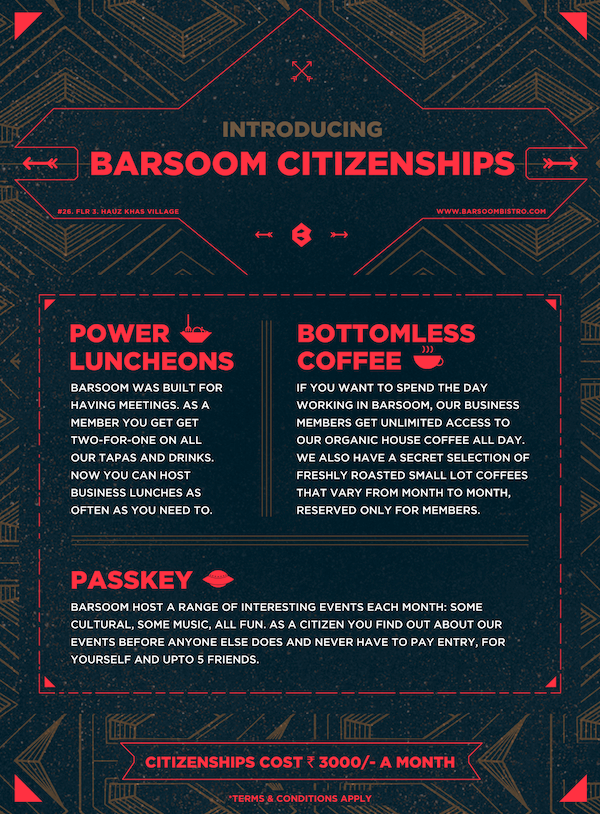
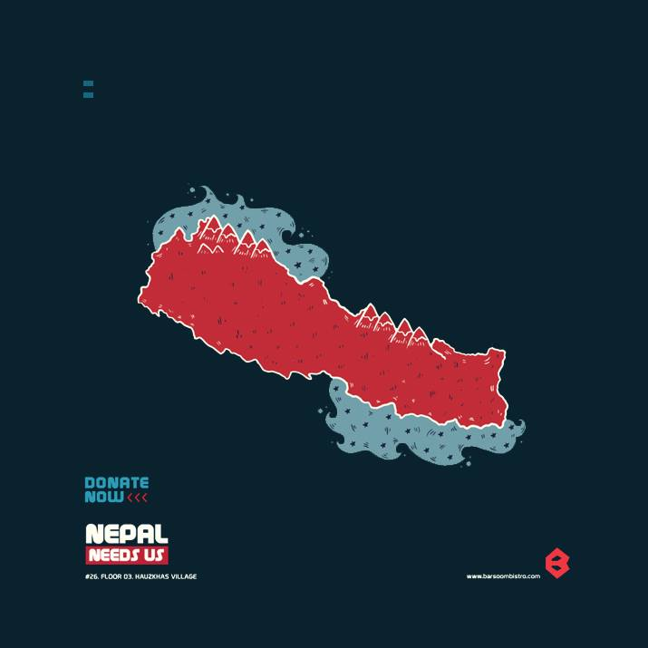
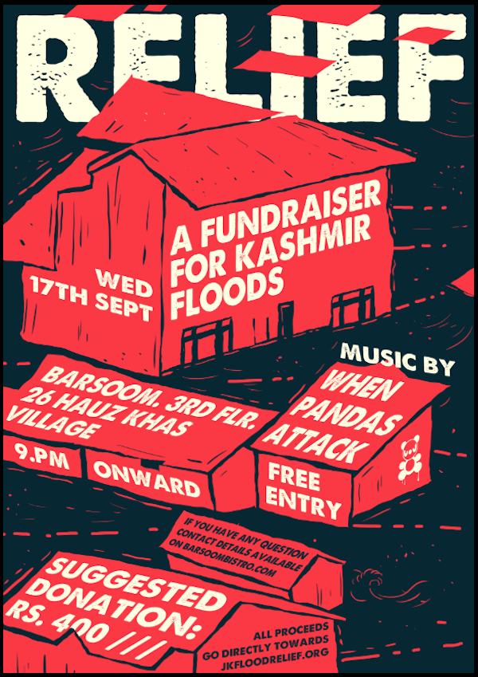
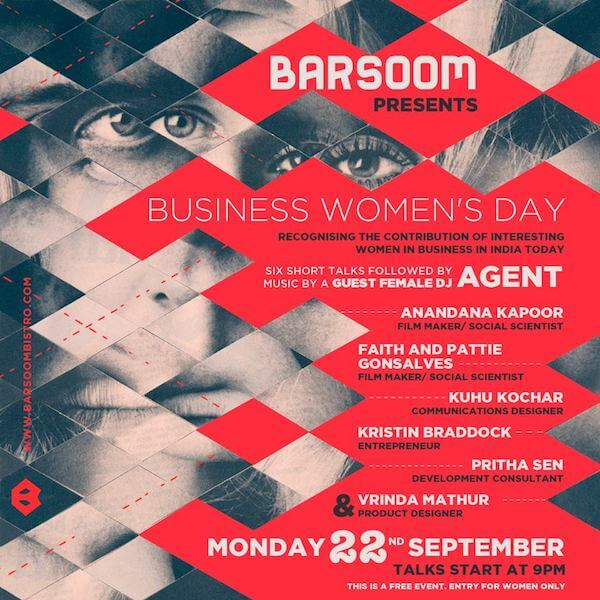

Given the amount of advertising we are exposed to on a daily basis, most people now instinctively resist anything that feels like marketing.
People do not like being sold to.
In our hyper-connected social world, most people now hear about interesting ideas from each other.
One way to sidestep the growing resistance to marketing is by finding ways to get people to talk to each other about your business.
Word of mouth is ultimately the most effective and most desirable form of marketing for any business.
THE IMPORTANCE OF FANS
My first experience designing a campaign based on helping people talk to each other was for a cafe in 2014.
We had a tiny amount of money to play with and just over a month to prepare.
The first step was to design a website. This was going to be the first glimpse of our business out in the world. We needed something to direct people to when we talked about it online. It needed to be clear about who we wanted to target and the tone we wanted to take.

This was the first restaurant website I ever worked on. I learnt that all you need is a menu and a map with a number to call for reservations. Those are the only things people look for on a restaurant's website.
Since there was no restaurant to go at this point, the purpose of the website was to collect emails from people who wanted to know when we opened. When we launched there was a giant email collection form in the first image.
We now had a website to point people to, and the beginning of a mailing list.
To drive attention to the website we put together a collection of weekly facebook posts for each of the three weeks leading up to the launch. The goal was consistency. We wanted the name to feel familiar by the time we launched.
We invested all the money we had to spend on marketing on the best designer we could work with.
This was the first look we came up with.

Then we wanted something less tame.

We didn't want to go pop, so we finally settled on tribal space lounge.
For the next three weeks, we counted down with a different graphic each day, we introduced our menu, pictures of the space, pictures of the food, and then we launched with a party.

Being able to capture contact information for people who care about what you are doing is the most important prerequisite to a low-budget campaign.
A handful of delighted fans will make more quality noise than any ad campaign you could afford.
Being able to communicate with them is the first step to delighting them.
WHO COULD WE MATTER TO MOST?
We had a beautifully designed venue, great food, amazing coffee, a professional website, over 500 people on our mailing list, and a consistent brand coming together on facebook...but there was no story.
Our business wasn’t cutting edge and it didn’t naturally stick out of the crowd. It was a nice cafe, in a sea of cafes. For all intent and purposes, we were boring.
The thing is, businesses are only boring if you try and make them appeal to everyone.
We needed to focus on one small, tight-knit group. We needed to solve a problem for them. If we put sincere effort in, we had a fair chance at getting them to talk to each other about us and do the best kind of marketing for free.
We decided to focus on young entrepreneurs, creative professionals and writers. We wanted to target people that were working on interesting projects that concerned our shared future. We wanted to focus on people were concerned about the future because we were a space themed martian cafe and bar.
The reason we focused on young, self-employed professionals is because that's who we were and who we could relate to. We needed someone nice to work in the day, somewhere gorgeous that we could have work meetings, and we wanted somewhere that played good music and was safe to go at night.
So we offered our fans citizenship.

CITIZENSHIPS
Citizenship meant that you got two-for-one of any meals in the day, you had access to a faster internet connection, you could drink as much organic coffee as you wanted for free, you heard about events before anyone else and got discounts to paid gigs.
We wanted to become the place young professionals would have their work meetings out of the office. We weren't trying to get them to talk about how gorgeous the place was or how great the food was. The goal of the campaign was to become the obvious answer to 'where should we meet'?

The entire campaign hinged on this one idea. Our entire approach was based on getting people to talk to each other about us. We narrowed in on a specific subset of people we wanted to target, we couldn't afford a shotgun approach. Then we worked hard to become the obvious answer to one question those people ask each other. We picked a question that comes up a lot.
The aim should never be to try and dominate a conversation. That's unrealistic. The goal is to pick one question and proceed to do everything you can to become the obvious answer to that question.
CONCLAVES
The way we decided to get the word out was to put together events for young professionals. Our creative strategy was to back a noble cause.
For example, in 2014 there was a terrible earthquake in Nepal and a horrendous flood in Jammu and Kashmir.

We asked musicians if they would play for charity if we organised a fundraiser.
We found an organisation that we could give the money to and asked if they could send some to speak about how the money was going to be spent.
We then publicly challenged other restaurants to raise money at their events for the same cause. Another restaurant accepted the challenge. This was one week after the ALS Ice bucket facebook craze. The spirit of responding to challenges was in the air.
We got a fantastic poster made, printed it out and put it on facebook.

We sent out invites to 679 people. Mostly reporters, other fundraisers and people that work in the NGO sector.
We sent the news out to Barsoom's email list. We sent news about the event to the 20 event listing website we knew of in the city. We re-sent it to their social media platforms. We then cross posted to a collection of facebook groups that dealt with events in the city, local causes, international causes, activist groups, and young professional groups like photographers, musicians, writers and artists.
On the night I made sure people couldn't get in without me asking them to donate money. I also collected their email address for the mailing list.

In one night Barsoom and Hauz Khas Social collectively raised Rs. 57,111 for JK Flood Relief.
We took pictures at the event and then sent out a press release after the event.
Then we thanked everyone for coming on facebook and explained everything that happened in the next email that went out to the mailing list.
Everyone wanted to help, we just made it easy to do so.
This was the format we followed for publicity around all our events.
We did another fantastic event using the same approach on international women's day. We invited two film makers, two designers, a development consultant and an entrepreneur to come and speak about their work in the city. All the speakers were women, and only women could attend the event.

Our events leveraged the fact that there was something everyone was aware of in the news that week. We just waited for each of the opportunities.
Piggy backing news stories is a great way to co-opt attention but it is not a sustainable strategy.
The large majority of events were music gigs.

THE RESULTS
Ultimately music was where the money was. Booking musicians that had clout meant people would come and spend money on alcohol.
The memberships didn't work either. The goal was to sell 100 memberships. We didn’t come anywhere near that number by the end of the three month campaign.
The campaign was a success in the fact that we managed to get a business off the ground with a tiny marketing budget. The business ran successfully for two years and then the venue was sold in the beginning of 2016.
The problem is that I can't tell you exactly how much profit each aspect of the campaign generated. I don't know if spending the money we did on a designer had any impact on our bottom line. This is embarrassing given how much effort went into those three months.
After this experience I have learned how to use google analytics so that I can track these numbers. My next email will explain how to setup google analytics so that you can measure the success of each of your marketing efforts. You can sign up to my mailing list here if you would like to read that story when it's ready.
DESIGNING YOUR OWN CAMPAIGN
Our marketing campaign was based on throwing events, promoting those events on facebook and then having a membership for our closest fans.
We focused on events because we were a physical business. Do not try and do the same thing. It probably won't work. It barely worked for us.
You can put your own campaign together with partnerships or co-branding, you could write articles online, you can do a giveaway, you can do crazy stunts, you can do weekly webinars, maybe a podcast, do talks, go to meetups, partner with other projects, set up a physical shop, rally for a cause, or give away free samples.
The real campaign was designing the events to appeal to a specific group of people we chose, young professionals. We picked one question, "where should we meet?" and tried to become the most obvious to that question.
Word of mouth is ultimately the most effective and most desirable form of marketing for any business.
One way to sidestep the growing resistance to marketing is to find ways of getting people to talk to each other about your business.
In our hyper-connected social world, most people now hear about interesting ideas from each other.
TOOLS AND RESOURCES
-
Animal Design
We worked with Kunel Gaur and Sharon Borgoyary of Animal Design. They are incredible designers and were wonderful to work with. They did all of our deisgn work and we couldn't recommend them more.
-
Press Release for JK Flood Relief Fundraiser
This is the Press Press release we sent out after our first Fundraiser.
-
The Original Campaign Pitch
This is a little slideshare that I used to pitch the whole idea for this campaign.
-
Tiny Letter
We use tiny letter to collect and send emails. Anything more complicated would just be a hassle to maintain. Not using a mailing list to send out more than 10-20 emails will just get you email blacklisted and blocked by most mail accounts.
-
1000 True Fans
A fantastic article by Kevin Kelly about the importance of grooming fans.
-
Growth Hacker
A lot of the ideas for this campaign came from an approach to marketing called 'Growth Hacking'. This course and book by Ryan Hoiday are a fantastic non-technical introduction to the topic.